Delicious Bites Menu
Appetizers

-
Salade Caprese: Tomates fraîches, mozzarella et basilic arrosés d'un glaçage balsamique.
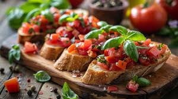
-
Bruschetta: Pain grillé garni de tomates hachées, ail et basilic frais.
-
Gougères: Petits choux au fromage servis chauds.
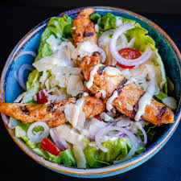
-
Salade cesar: laitue croquante, croûtons, parmesan et sauce crémeuse. Un délice frais et savoureux .

-
Salade de poulpe: poulpe tendre, légumes croquants, herbes fraîches et vinaigrette citronnée. Un mélange frais et savoureux.
Main Courses
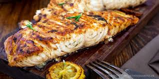
-
Saumon grillé: Filet de saumon assaisonné et grillé à la perfection, servi avec une sauce au beurre citronné.
-
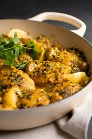
Poulet au citron: Blanc de poulet mariné, rôti et servi avec des légumes de saison.
-
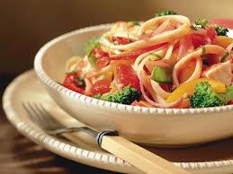
Pâtes Primavera: Pâtes fraîches avec des légumes de saison et une sauce légère à l'ail.
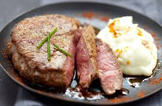
Filet de boeuf grillé: Un tendre filet de bœuf, cuit à la perfection, servi avec une sauce cremeuse et des légumes de saison.
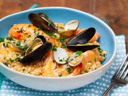
Risotto aux fruits de mer: Crémeux et riche, ce risotto aux fruits de mer combine crevettes, moules et calamars, le tout délicatement parfumé au safran.
Desserts
-
Fondue au chocolat: Assortiment de fruits et de guimauves servis avec une riche fondue au chocolat.
-
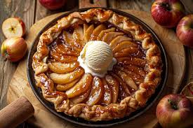
Tarte Tatin: Tarte aux pommes caramélisées servie tiède avec de la crème fraîche.
-
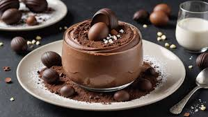
Mousse au chocolat: Mousse légère et aérienne au chocolat noir, garnie de crème fouettée.
-
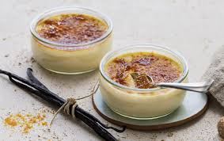
Crème brûlée à la vanille
: Une crème onctueuse à la vanille, délicatement caramélisée sur le dessus, offrant un contraste parfait entre douceur et croquant.
-
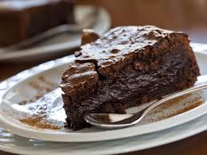
fondant au chocolat
: Un cœur fondant au chocolat noir, servi tiède avec une boule de glace à la noisette. Un véritable plaisir pour les gourmands.
Contactez-nous pour les réservations